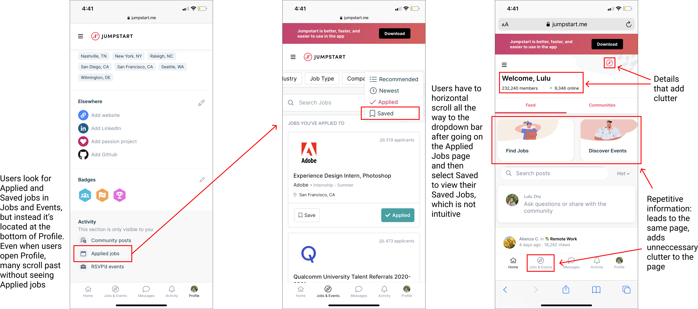

Introduction
While Jumpstart has potential and plenty of positives—a modern UI, a combination of features from multiple career websites, and
a unique communities section—it is still early in development compared to other career websites. There are features that are less
intuitive which we pinpoint through user testing and interviews.
User Research
Our intended users, college students, have experience job hunting and can provide deeper insight through their experiences.
Even if they do not have previous experiences on career websites, it's highly beneficial to have fresh perspectives for insight
regarding general structure and usability of the website rather than the functions and features.
Through background questions, tasks, and post-testing questions, we found that:
- The Saved Jobs and Applied Jobs section was hard to locate
- More users use the navigation bar as an entry point for searching for jobs and events
- The two navigation bars (bottom and left of the page) are confusing
- The number of members using the platform and the number of users online is irrelevant
Core Pain Points

We decided to improve general navigation and usability, focusing on locating the Saved and Applied jobs and adjusting the site's layout
to reduce home page clutter.
AB Testing and Final Analysis
Our original goal was to create a seamless navigation feature for our users as we found through initial
testing that they were dissatisfied with where Jumpstart places their Applied and Saved jobs. Both of
our designs were succesfully able to combat this issue, confirmed through a second round of testing, with
Prototype A moving it to the center of the front page and Prototype B prompting users to use the updated
navigation features to find it through the menu. However, half of our user testing intially had issues
finding the Applied and Saved jobs in the menu but became apparent once they pressed the menu option. About
75% of our interviees loved the clean and modern initial Jumpstart layout, which we kept successfully in
our redesigns.
Through AB testing, we found that Design B was more successful due to the convenience and usability of the
sidebar; users found it was easier to navigate and find pages and the side bar helped declutter insignificant
information. Moving forward, we recommend incorporating the Design A's decluttering aspects such as including
communities in the lower navigation bar, simplifyingthe header, and representing Activity has a bell in the
top right of the homepage.